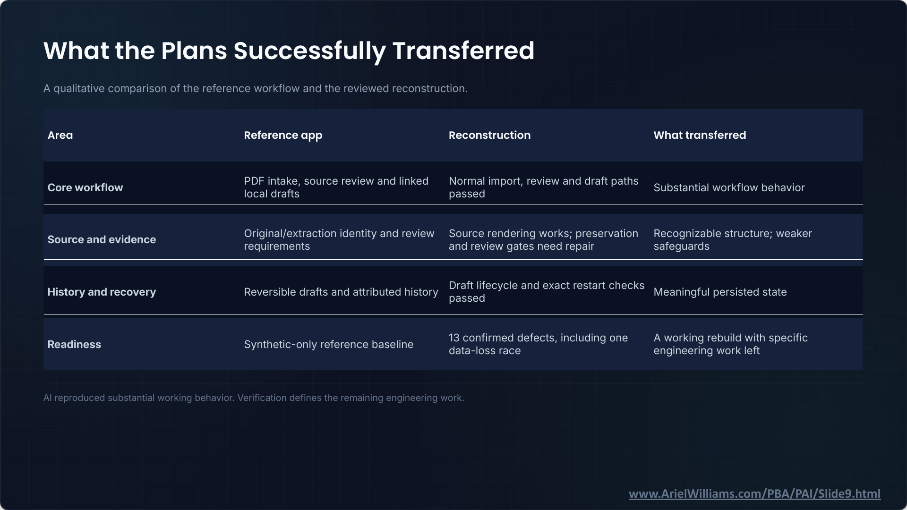

It Works: Agentic Coding and Legal Technology · Slide 9 of 12
What the Plans Successfully Transferred
Slide snapshot captured · Ariel Williams


Text transcript
A qualitative comparison of the reference workflow and the reviewed reconstruction.
| Area | Reference app | Reconstruction | What transferred |
|---|---|---|---|
| Core workflow | PDF intake, source review and linked local drafts | Normal import, review and draft paths passed | Substantial workflow behavior |
| Source and evidence | Original/extraction identity and review requirements | Source rendering works; preservation and review gates need repair | Recognizable structure; weaker safeguards |
| History and recovery | Reversible drafts and attributed history | Draft lifecycle and exact restart checks passed | Meaningful persisted state |
| Readiness | Synthetic-only reference baseline | 13 confirmed defects, including one data-loss race | A working rebuild with specific engineering work left |
AI reproduced substantial working behavior. Verification defines the remaining engineering work.
Slide footer: www.ArielWilliams.com/PBA/PAI/Slide9.html